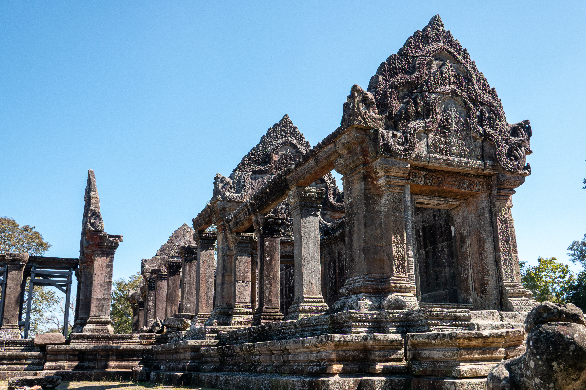

អំពីខេត្តព្រះវិហារ
ខេត្តព្រះវិហារ ស្ថិតនៅភាគខាងជើងនៃព្រះរាជាណាចក្រកម្ពុជា និងជាខេត្តដែលមានកេរ្តិ៍ឈ្មោះល្បីល្បាញដោយសារប្រាសាទព្រះវិហារ ដែលត្រូវបានចុះបញ្ជីជាបេតិកភណ្ឌពិភពលោកដោយអង្គការយូណេស្កូ។ ខេត្តនេះមានព្រៃឈើ ភ្នំ និងធនធានធម្មជាតិដ៏សម្បូរបែប ព្រមទាំងមានសក្ដានុពលខ្ពស់លើវិស័យទេសចរណ៍វប្បធម៌ និងធម្មជាតិ។
ប្រវត្តិសង្ខេប
ខេត្តព្រះវិហារមានប្រវត្តិយូរអង្វែងតាំងពីសម័យអាណាចក្រខ្មែរ។ ប្រាសាទព្រះវិហារត្រូវបានសាងសង់ឡើងចន្លោះសតវត្សទី៩ ដល់ទី១២ ក្នុងរាជកាលព្រះមហាក្សត្រខ្មែរ។ នៅឆ្នាំ២០០៨ ប្រាសាទព្រះវិហារត្រូវបានអង្គការយូណេស្កូ ចុះបញ្ជីជាបេតិកភណ្ឌពិភពលោក ដែលបានធ្វើឱ្យខេត្តនេះកាន់តែមានភាពល្បីល្បាញនៅលើឆាកអន្តរជាតិ។
កន្លែងទេសចរណ៍សំខាន់ៗ
- ប្រាសាទព្រះវិហារ
- ប្រាសាទកោះកេរ
- ប្រាសាទព្រះខ័នកំពង់ស្វាយ
- ភ្នំត្បែង
- ទឹកធ្លាក់ភ្នំត្បែង
- សហគមន៍អេកូទេសចរណ៍ព្រៃឡង់
ទីតាំងភូមិសាស្ត្រ
ខេត្តព្រះវិហារ ស្ថិតនៅភាគខាងជើងនៃប្រទេសកម្ពុជា មានព្រំប្រទល់ជាប់ខេត្តឧត្តរមានជ័យ ខេត្តសៀមរាប ខេត្តកំពង់ធំ ខេត្តស្ទឹងត្រែង និងប្រទេសថៃ ព្រមទាំងប្រទេសឡាវនៅភាគឦសាន។ ទីតាំងនេះធ្វើឱ្យខេត្តមានសារៈសំខាន់ទាំងផ្នែកប្រវត្តិសាស្ត្រ ពាណិជ្ជកម្ម និងការអភិរក្សធនធានធម្មជាតិ។